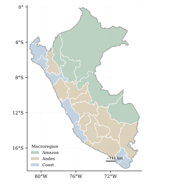
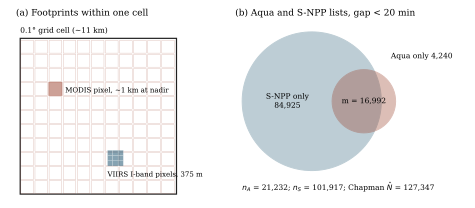
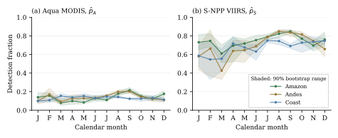
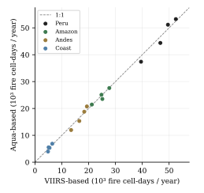
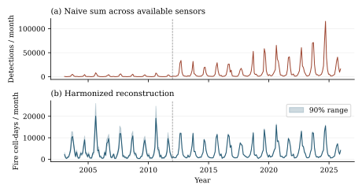
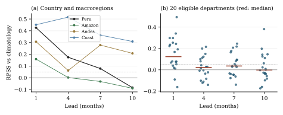
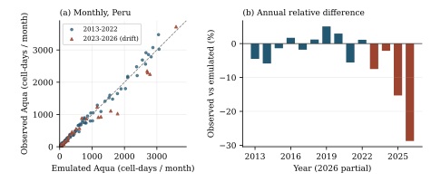
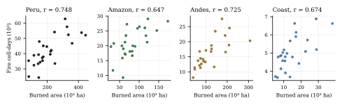

Elis: Harmonizing the Fire Record of Peru, 2000–2026
Team Log N + 1 · Peru
Abstract
Changes in satellite resolution and sampling complicate long-term fire monitoring. We construct a comparable record for Peru using MODIS and VIIRS observations aggregated to 0.1° fire cell-days. A Chapman capture–recapture estimator is calibrated on near-simultaneous Aqua and S-NPP overpasses, with region-specific corrections, bootstrap uncertainty and a complementary statistical MODIS emulator. The naive detection sum rises from 10,375 in 2011 to 92,807 in 2012 (8.95 times). On held-out years 2021–2024, the national annual discrepancy between Aqua-based and VIIRS-based reconstructions is 3.77%, whereas the naive cross-unit comparison is 333.90%. Annual reconstructed activity correlates with MapBiomas burned area at r = 0.748. For August–October 2026, the one-month-lead seasonal forecast is 24,392 fire cell-days (90% predictive range 18,848–31,568); the provisional reconstruction is 22,955 (22,756–23,280, calibration range). National lead-one ranked probability skill is 0.426 against climatology. Dependence diagnostics and a calibrated simulation indicate residual undercounting, approximately 11% in the best-fit simulated scenario; this is not an empirically identified correction. Elis therefore presents a conservative reconstruction with conditional ranges, separates forecasts from observations, and supports reproducible comparison across sensor transitions.
Keywords: active fire; Peru; MODIS; VIIRS; capture–recapture; sensor harmonization; seasonal prediction
1 Introduction
A longer satellite record is not necessarily a more comparable one. MODIS samples active fire at approximately 1 km (Justice et al., 2002; Giglio et al., 2016), whereas the VIIRS I-band product samples at 375 m (Schroeder et al., 2014; Csiszar et al., 2014). Reviews of satellite active-fire detection describe how such sensor and sampling differences shape fire records (Wooster et al., 2021), and the burned-area literature documents the same tension between record length and consistency (Chuvieco et al., 2019). Differences in sensitivity, observation time and the number of operating platforms alter detection totals even when underlying activity is unchanged. Agricultural landscape comparisons document such sensor-dependent differences (Vadrevu and Lasko, 2018). A detection is also not a delineated fire event: event reconstruction requires additional spatial and temporal assumptions (Andela et al., 2019).
For Peru, this discontinuity matters when interpreting historical variability and training seasonal outlooks. Our objective is a comparable regional record, rather than an inventory of individual fires or emissions. Contributions are: calibration restricted to near-simultaneous overpasses; a separate emulator and held-out reconstruction check; explicit dependence and underestimation diagnostics; and a forecast and continuity layer whose uncertainty and validation are kept distinct from the historical record.
2 Data
The study covers Peru, from November 2000 through 13 November 2026. FIRMS supplies MODIS Collection 6.1 Terra/Aqua observations at 1 km, using the Collection 6 active-fire algorithm (Giglio et al., 2016), and VIIRS 375 m observations (Schroeder et al., 2014) from S-NPP, NOAA-20 and NOAA-21 (NASA, n.d.). Standard-processing observations form the historical record; August–November 2026 uses near-real-time (NRT) inputs. November is partial and is not extrapolated to a full month. S-NPP is the calibrated VIIRS reference; other VIIRS platforms are not simply added to its counts.
Product characteristics follow NASA VIIRS Land SIPS (n.d.). Standard data retain vegetation detections (type = 0), MODIS confidence at least 30 and VIIRS nominal/high confidence. Known outages and degraded Aqua coverage are masked using scripts/config.py. Because NRT lacks the type field, a static-source mask flags cells with at least five non-vegetation detections and a non-vegetation share of at least one half in 2012–2025. Its evaluation on 2024–2025 overlaps those construction years and is therefore in-sample.
INEI department boundaries define three macroregions: Amazon, Andes and Coast. Cells are assigned to the department covering the largest fraction of their area; Callao is included as a departmental unit. These administrative groups facilitate regional reporting but do not coincide exactly with ecological zones (Figure 1).

Seasonal predictors include NOAA CPC ONI, ENFEN/IGP ICEN and accumulated-precipitation drought predictors derived from NASA POWER monthly precipitation (Section 3.5). These are explanatory inputs, not additional fire observations. MapBiomas Fuego Peru burned-area statistics (MapBiomas Peru, n.d.), derived from Landsat with a method developed for Brazil (Alencar et al., 2022), are used only for validation, not to calibrate the harmonization. Although the source archive extends earlier, scripts/mapbiomas.py retains 2000–2025, and scripts/validate.py correlates shared annual totals in 2001–2025, excluding the incomplete first year.
3 Methods
Table 1 defines the notation. Indices are region \(r \in \{\text{Amazon}, \text{Andes}, \text{Coast}\}\), year \(y\), calendar month \(m\) and, where needed, an availability segment within a month. National values are sums of regional values or of aligned regional replicates; they are never fitted separately in the reconstruction.
| Symbol | Meaning |
|---|---|
| \(n_A, n_S, n_T, n_N\) | Cell-days detected by Aqua MODIS, S-NPP VIIRS, Terra MODIS and NOAA-20 VIIRS on available days |
| \(m\) | Cell-days detected by both Aqua and S-NPP (recaptures) |
| \(\hat N\) | Chapman estimate of latent active cell-days sampled by the paired overpasses |
| \(\hat p_A(r,m), \hat p_S(r,m)\) | Detection fractions of Aqua and S-NPP for region \(r\) and calendar month \(m\) |
| \(\mathcal Y_c, \mathcal Y_t\) | Calibration years 2013–2020 and held-out test years 2021–2024 |
| \(B\), \(b\) | Number of bootstrap replicates (500) and replicate index |
| \(\beta_{r,s}\), \(f_{r,m}\) | Log bias of Aqua- relative to VIIRS-based reconstruction in season \(s\); multiplicative correction \(f_{r,m}\) |
| \(\rho_{r,m}\), \(\kappa_r\) | Terra-to-Aqua bridge ratio; NOAA-20-to-S-NPP ratio |
| \(\varepsilon_{r,y,m}\) | Structural residual ratio, predicted/reference, used in whole-year blocks |
| \(h \in \{0,1\}^3\), \(x_{s,h}\) | Capture history (Aqua, S-NPP, NOAA-20) and its count in stratum \(s\) |
| \(q_i\) | Emulator probability that Aqua detects S-NPP cell-day \(i\) |
| \(S_{u,y}\) | August–October total of reconstructed fire cell-days in unit \(u\) and year \(y\) |
| \(P_k, O_k\) | Cumulative forecast and observed probabilities of ordered class \(k\) |
| \(z_{\gamma}\) | Standard normal quantile; \(z_{0.95} = 1.645\) for 90% ranges |
3.1 Estimand, grid and capture–recapture
An observed fire cell-day is a 0.1° grid cell (approximately 11 km across) with at least one detection on a date. Multiple detections in the same cell and date count once per sensor. The reconstruction targets latent active cell-days sampled by the afternoon overpass and its nighttime counterpart; it neither counts distinct fires nor measures burned area. Figure 2 contrasts the nominal footprints with the aggregation cell: a 0.1° cell contains roughly 120 nadir MODIS pixels and close to 900 nadir VIIRS I-band pixels, so the cell-day is a deliberate coarsening that reduces the effect of pixel-size differences without removing differences in sensitivity.
Capture–recapture is a standard tool for closed populations (Seber, 1982) and has also been applied to terrestrial fire records (Rho Environmetrics and John Field Consulting, 2011). For region \(r\) and calendar month \(m\), calibration counts are pooled over years and over a support set of months \(\mathcal M_{r,m}\):
with the same sum for \(m\). \(\mathcal M_{r,m}\) is \(\{m\}\); if fewer than five recaptures result, it becomes \(\{m-1, m, m+1\}\) (cyclic), and then all twelve months. In the current data every region-month reaches five recaptures without pooling. Only region-days on which both sensors are available and their daytime overpasses are less than 20 minutes apart enter Equation (1). The Chapman (1951) estimator and the detection fractions are
The implementation also provides the Seber variance and the log-normal interval of Chao (1987), which bounds the interval below by the observed union \(n_{\cup} = n_A + n_S - m\):
Equations (3)–(4) are used in the simulation and dependence diagnostics (Section 3.4) and in unit tests. They are not the source of the published ranges: published ranges come from the year bootstrap below, without an observed-union bound, because the reconstructed estimand on non-calibration days is not the union of the two lists on that day. Figure 2b shows the national calibration lists, and Figure 3 the resulting fractions.

Year bootstrap. Calibration uncertainty is represented by resampling whole calibration years, which preserves within-year dependence between months and cell-days (Efron and Tibshirani, 1993). For replicate \(b = 1, \dots, B\), a multiset \(\mathcal Y_c^{*b}\) of eight years is drawn with replacement, shared by all regions and months, and
where \(\hat N^{*b}\) applies Equation (2) to the resampled counts. Point estimates use the full-sample \(\hat p_j\); replicates use \(\hat p_j^{*b}\).

From counts to the record. Each month is split into availability segments (both sensors, S-NPP only, NOAA-20 only, Aqua only, Terra only). For segment counts in region \(r\), year \(y\) and month \(m\), the reconstruction is
and the monthly value is the sum over segments. The Terra bridge is \(\rho_{r,m} = \sum n_A / \sum n_T\) over days with both MODIS sensors in 2003–2011, with its own year bootstrap; the NOAA-20 ratio is \(\kappa_r = \sum n_S / \sum n_N\) on S-NPP-available days of January–October 2026, bootstrapped over months, and is used only if its monthly coefficient of variation is at most 0.25. After calibration, Aqua counts divided by \(\hat p_A\) reconstruct the pre-VIIRS period, and from 2012 S-NPP counts divided by \(\hat p_S\) provide the main series, with Aqua on S-NPP outage days.
Region/season bias factors. On calibration days with both sensors, the Aqua-based and VIIRS-based reconstructions can be compared month by month. For season \(s\) (high: July–November; low: other months) the pooled log bias is
where \(\hat\beta_r\) pools all months and the 90% intervals come from 500 resamples of calibration years. In the production series \(f_{r,m}\) is applied only before 2012. The Amazon and Coast factors are seasonal; the Andes factor is one because its annual interval includes zero (Appendix Table A2). Factors are measured only in calibration years; the 2021–2024 test years remain held out.
3.2 Uncertainty and structural transfer
Published ranges are 90% intervals. Each regional month carries \(B\) aligned replicates \(\hat N^{(b)}_{r,y,m}\), obtained by evaluating Equation (6) with \(\hat p^{*b}\), \(\rho^{*b}\) and \(\kappa^{*b}\). Before 2012, whole-year structural residual blocks supplement calibration uncertainty:
where \(\bar N_{r,y,m}\) is the bias-corrected point projection of the MODIS segment, \(\varepsilon\) is the ratio of predicted to reference monthly totals and \(y_b^{\star}\) is one residual year drawn per calendar year and replicate, shared across regions and months. For Aqua, \(\varepsilon\) comes from calibration-year Aqua-versus-VIIRS comparisons rescaled so that each region's residuals sum to its reference total; for Terra it comes from the 2003–2006 backcast with a 2007–2011 bridge. Annual, seasonal and national intervals are
for any aggregate \(\mathcal A\) with point estimate \(\hat T\): quantiles of sums of aligned replicate draws, never sums of monthly interval endpoints. Post-2012 ranges primarily describe calibration uncertainty and do not encompass all shared omissions or structural bias.
3.3 Bayesian three-list diagnostic
An experimental model adds NOAA-20 over April 2018–December 2022, excluding 72 days with an outage of any satellite. Following the log-linear treatment of multiple-recapture data (Fienberg, 1972), each stratum \(s\) (region, year and month) has eight histories \(h = (h_A, h_S, h_N)\), of which the seven with at least one detection are observed:
where \(\phi(h) = (h_A h_S,\, h_A h_N,\, h_S h_N)\) holds the pairwise products and no three-way term is included, which is the identifying assumption. Main effects and dependence are hierarchical:
with \(\mathcal N^{+}\) a half-normal with the given scale. Estimated quantities are \(N_s\), the unseen count \(N_s \pi_{s,000}\), the per-satellite detection probabilities and the pairwise log odds ratios \(g_{r,jk}\). Sampling uses the No-U-Turn sampler (Hoffman and Gelman, 2014) in NumPyro (Phan et al., 2019): four chains of 1,000 draws after 1,000 warm-up iterations, target acceptance 0.9. A variant lets \(g\) differ between dry (July–November) and wet seasons. Posterior predictive checks, a held-out S-NPP test and synthetic recovery assess fit. NOAA-20's pass about 50 minutes after S-NPP makes the inferred population a temporal-window quantity rather than the simultaneous snapshot in Equation (2). Consequently, the diagnostic is not used as a multiplier for the published record.
3.4 Statistical MODIS emulator and underestimation simulation
For every S-NPP cell-day \(i\) on days when both sensors are available, a label \(Y_i = 1\) records whether Aqua detected the same cell on the same date. A histogram gradient-boosting classifier (Friedman, 2001; scikit-learn, Pedregosa et al., 2011) estimates \(q_i = \Pr(Y_i = 1 \mid \mathbf v_i)\) from detection count, summed and maximum radiative power, maximum brightness temperature, mean scan and track pixel size, day and night flags, \(\sin(2\pi m/12)\), \(\cos(2\pi m/12)\) and region (300 iterations maximum, learning rate 0.05, 31 leaves, early stopping on 10%). Training uses 2013–2020; classification is tested in 2021–2024. The MODIS-equivalent monthly count adds an Aqua-only residual rate:
Its 90% range uses 500 replicates \(\hat A^{(b)} = \max\{0,\, G^{(b)} + R^{(b)}\} \exp(e^{(b)})\), where \(G^{(b)} \sim \mathcal N(\sum \hat q_i, \sum \hat q_i(1 - \hat q_i))\) approximates the Bernoulli sum, \(R^{(b)} \sim \mathrm{Poisson}(\lambda n_S)\), and \(e^{(b)}\) is resampled from the region's monthly \(\ln(A/\hat A)\) residuals in 2013–2022, excluding the month's own year and months with fewer than 20 Aqua cell-days. This is a statistical mapping, not a radiance-level sensor simulation.
A separate latent-intensity simulator represents heterogeneous detectability and activity turnover between passes. Each simulated cell-day has latent log radiative power \(x \sim \mathcal N(\mu, \sigma^2)\) and lifetime \(L(x) = t_0 \exp\{\kappa (x - x_{\mathrm{ref}})\}\), and sensor \(j\) detects it with probability
with \(\delta_S = 0\) and \(\tau_S = 0.4\) fixed. The 13 parameters are fitted to overlap rates by overpass gap, Aqua–S-NPP conditional detection, radiative-power-dependent persistence between S-NPP and NOAA-20, and the simultaneous Chapman-to-S-NPP ratio. Estimators are scored against simulated truth by relative bias \(\mathbb E[\hat N/N] - 1\) and 90% interval coverage across a best-fit scenario and four less compatible alternatives (low or high heterogeneity, low or high turnover). The exercise diagnoses identifiability and interval failure; it does not supply an observed correction for Peru.
3.5 Seasonal prediction and validation
For unit \(u\) (Peru, macroregion or department) the target is \(Y_{u,y} = \ln(S_{u,y} + 1)\), with \(S\) the August–October sum of reconstructed fire cell-days. For lead \(\ell \in \{1, 4, 7, 10\}\) months the forecast origin is \(t_0 = \text{August of } y - \ell\). Candidate predictors are
where \(P_t\) is monthly NASA POWER precipitation (mm) averaged over the unit's grid points. Earlier versions of this article called \(X^{\mathrm{P}k}\) "SPI"; the code uses log accumulated precipitation, which is a drought-related predictor but not the standardized precipitation index. Candidate sets always include \(X^{\mathrm{fire}}\) and add one ENSO index and/or one precipitation window. With standardized predictors \(\mathbf Z\), ridge regression (Hoerl and Kennard, 1970) gives
where \(\alpha\) is chosen from {0.1, 0.3, 1, 3, 10, 30, 100} by exact leave-one-out error within the training fold, the predictor set minimizes leave-one-out mean squared error, and \(s\) is the root-mean-square leave-one-out residual. The 90% predictive range is \(\exp(\hat Y \pm z_{0.95} s) - 1\). Four ordered classes (low, normal, high, very high) are separated by the 25th, 75th and 90th percentiles \(c_1, c_2, c_3\) of training-year season totals; climatological probabilities are therefore (0.25, 0.50, 0.15, 0.10), and model probabilities are \(\Pr(k) = \Phi\big((\ln(c_k + 1) - \hat Y)/s\big) - \Phi\big((\ln(c_{k-1} + 1) - \hat Y)/s\big)\). Leave-one-year-out validation over 2003–2025 removes both the target year and any sample whose origin falls in that year. The ranked probability score (Epstein, 1969) and its skill score (Weigel et al., 2007) are
with \(K = 4\), \(P_k\) and \(O_k\) the cumulative forecast and observed (0/1) class probabilities and bars denoting means over withheld years. MAE skill is \(1 - \overline{|Y - \hat Y|}/\overline{|Y - \ln(\tilde S + 1)|}\), where \(\tilde S\) is the training median, and empirical coverage is \(n^{-1}\sum \mathbf 1\{|Y - \hat Y| \le z_{0.95} s\}\). A regional model is published only when RPSS ≥ 0.05 and MAE skill is positive; otherwise climatology is shown. Departments with median season activity below 100 fire cell-days receive no forecast. The 2026 test excludes that year from fitting, but is a retrospective out-of-sample reconstruction, not proof that forecasts were issued before the season.
Reconstruction and emulator metrics. For held-out years, the Aqua-versus-VIIRS discrepancy compares bias-corrected Aqua-based and VIIRS-based reconstructions on identical days with both sensors:
where \(D\) is the naive detection sum. Here \(f_{r,m}\) is applied in the test years to check its temporal transfer. The emulator's monthly error is \(100\,\overline{|\hat A - A|/A}\) over months with \(A > 0\), and its classification AUC is the Mann–Whitney probability \(\Pr(\hat q_i > \hat q_{i'} \mid Y_i = 1, Y_{i'} = 0)\) (Fawcett, 2006). External consistency uses the Pearson correlation of annual reconstructed totals with MapBiomas burned area.
3.6 Continuity and sealed predictions
A simulated MODIS shutdown switches the MODIS-scale display to the emulator. The harmonized VIIRS reconstruction retains its fixed calibration, except for its outage-filling dependency. A separate live workflow predicts same-day Aqua counts from VIIRS, seals inputs, model/calibration identifiers and canonical JSON with SHA-256 hashes, then scores later Aqua retrievals. This tests the instrument mapping, not future fire occurrence. A hash proves integrity, not that observations were unavailable when the prediction was sealed.
4 Results
4.1 Discontinuity, reconstruction error and historical variation
The 2011–2012 naive sum increases 8.95 times. This is not evidence of an equivalent increase in fire activity, and harmonization does not imply that all genuine interannual change vanishes. Table 2 distinguishes a same-unit reconstruction comparison from the intentionally misleading cross-unit naive baseline.
| Region | Aqua vs VIIRS (%) | Naive baseline (%) | MapBiomas r |
|---|---|---|---|
| Peru | 3.77 | 333.90 | 0.748 |
| Amazon | 2.31 | 361.44 | 0.647 |
| Andes | 6.98 | 336.76 | 0.725 |
| Coast | 9.01 | 199.16 | 0.674 |
Figure 5 shows the sixteen held-out region-years behind Table 2. Aqua-based reconstructions fall close to the 1:1 line; the largest relative departures are in the Coast and Andes in 2021, consistent with their larger tabulated errors. Annual values are listed in Appendix Table A4.

The descriptive log-linear national slope over 2003–2025 is +16.77% per year for raw detections and +0.18% for the harmonized record. No slope confidence interval is exported; these are fitted summaries, not evidence of a statistically significant ecological trend or measured emissions change.

| Month | Estimate | 90% range |
|---|---|---|
| August 2005 | 20,063 | 16,689–25,924 |
| August 2010 | 19,028 | 15,936–24,665 |
| August 2020 | 15,894 | 15,447–16,471 |
| September 2024 | 15,520 | 15,219–15,940 |
4.2 Seasonal outlook: withheld 2026 and backtest skill
Table 4 compares forecasts fitted through 2025 with provisional 2026 reconstruction. All four reference values fall within the forecast ranges. The most likely class is correct for Peru, Amazon and Andes (normal), but not Coast (very high forecast; normal reconstruction). One withheld season does not establish long-term forecast calibration.
| Region | Forecast [90% range] | NRT reconstruction [90% range] |
|---|---|---|
| Peru | 24,392 [ 18,848–31,568 ] | 22,955 [ 22,756–23,280 ] |
| Amazon | 13,456 [ 10,284–17,606 ] | 11,618 [ 11,509–11,775 ] |
| Andes | 9,337 [ 6,897–12,641 ] | 9,742 [ 9,501–10,044 ] |
| Coast | 1,976 [ 1,430–2,732 ] | 1,596 [ 1,561–1,668 ] |

| Lead (months) | Peru RPSS | Departments with skill / 20 eligible |
|---|---|---|
| 1 | 0.426 | 15 |
| 4 | 0.174 | 6 |
| 7 | 0.079 | 9 |
| 10 | -0.084 | 6 |

Skill decays with lead nationally and in the Amazon, whereas Coast skill remains above 0.3 at all leads (RPSS = 0.309 at ten months) and the Andes retain RPSS = 0.208 at ten months. Department skill is widely dispersed (Figure 7b), which is why the publication rule is applied unit by unit.
At the current ten-month lead, model-based department outlooks are retained for Áncash, Cusco, Junín, La Libertad, Lima and Pasco; national output falls back to climatology. In the separate sensor-transition experiment, fitting on 2003–2011 and testing 2013–2025 yields a national median observed/predicted ratio of 4.49 for raw detections versus 1.02 for harmonized activity. The raw model underpredicts after sensor entry; it does not demonstrate inflated future risk.
4.3 MODIS emulation and Aqua drift
The emulator's held-out classification AUC is 0.756, with 16.8% monthly total error nationally. It provides a complementary check but uses the same satellite family as the reconstruction and is not independent ground truth. Its extrapolation after Aqua drift estimates a stable-orbit counterfactual.

Before drift the emulator is nearly unbiased nationally (2013–2022 annual bias 0.4%, monthly error 12.5%, 90% range coverage 92.5% of months). After 2023 observed Aqua falls increasingly below the emulator (Figure 8b; Table 6).
| Year | Observed relative to emulated (%) |
|---|---|
| 2023 | -7.5 |
| 2024 | -2.1 |
| 2025 | -15.3 |
| 2026, partial | -28.8 |

5 Validation
Sensor reconstruction. The main test compares Aqua-only and VIIRS-only reconstructions on jointly available days of held-out years. It tests temporal transfer of the calibration, not accuracy against a fully observed latent population. The naive baseline divides detection totals by estimated cell-days and therefore is not a conventional same-unit accuracy score. Aqua-era bias correction improves regional comparability, although national cancellation of opposing regional biases can make the uncorrected annual total appear closer.
External consistency. MapBiomas correlations use annual burned-area and activity patterns, without converting one quantity to the other. The Coast and Andes correlations remain imperfect, and a single reference cannot identify absolute omissions. MapBiomas input-sensor transitions and its use of FIRMS hot spots to filter Andean scars limit independence. Figure 10 shows the annual pairs behind the correlations in Table 2. The within-Landsat-era correlations reported in the technical notes are not exported in the processed JSON and are not treated here as additional verified results.

Forecast and live checks. Cross-validation assesses historical probabilistic performance; the 2026 test excludes its target year from fitting. Neither substitutes for prospective evaluation. Early live seals were generated after the corresponding dates and constitute pipeline checks. Prospective status requires public timestamp evidence that the seal preceded availability of the Aqua reference, rather than merely a matching hash.
6 Discussion
The principal result is improved comparability across instruments, not recovery of all fire. Restricting calibration to near-simultaneous passes addresses a specific confounder: a detection in one list alone may represent temporal turnover rather than a sensitivity difference. Region/season transfer factors then address systematic gaps between reconstruction rules on ordinary days. The retained historical peaks show why removing an instrumental discontinuity should not be equated with smoothing away actual variation.
Previous MODIS–VIIRS comparisons support the need for sensor-specific interpretation (Vadrevu and Lasko, 2018; Csiszar et al., 2014). The method treats sensors as imperfect lists of one latent population rather than as interchangeable counters; this is the classical two-sample logic (Chapman, 1951; Seber, 1982), and its main weakness, heterogeneous catchability (Chao, 1987), is exactly what the dependence diagnostics in Sections 3.3–3.4 probe. The present emulator operates on aggregated detection features; it does not reproduce the physical detection algorithm. Similarly, the disagreement between sensors is only a candidate indicator of fire regime. Without controls for time, geometry, cloud and land cover, it cannot classify individual fires, identify deforestation fronts or determine site-level threat.
Continuity after MODIS depends on keeping a consistent observation scale, monitoring changes in VIIRS platforms and handling outages explicitly. A shutdown scenario establishes computational continuity under the adopted calibration; it does not validate future sensor stability. Live scoring can expose subsequent drift, but its first retrospective entries cannot demonstrate prospective accuracy.
The seasonal experiment illustrates how a measurement discontinuity propagates into a statistical model. Its result concerns forecast error on the chosen target and split, not effects on national greenhouse-gas inventories or agency resource allocation. Elis is a research and interpretation prototype; effectiveness for emergency deployment has not been evaluated.
7 Limitations and assumptions
Dependence and invisible activity. Positive dependence and heterogeneous sensitivity undermine the two-list independence assumption. The best-fit simulation in technical note 04 gives approximately 11% underestimation, with a simulated truth/reconstruction factor spanning 1.10–1.18 across replicates. That span is a simulation result, not a confidence interval for Peru. The conservative “lower-bound” interpretation is conditional, not a mathematical guarantee for every region and month. Joint cloud/smoke omissions can be larger and remain unidentified.
Three-list identifiability. Excluding the three-way interaction identifies the unseen history only under that assumption. NOAA-20 asynchrony changes the effective temporal population. No three-list multiplier is applied. The simulation comparison is also incomplete in some alternative scenarios, as documented in note 04; no tested alternative justifies a universal correction.
Ranges and early record. The Terra bridge through 2002 is low confidence. In build_replicates, regional centering does not remove monthly seasonal bias. Andes low-season estimates and early Terra estimates may lie near an endpoint of asymmetric ranges. Post-2012 narrow calibration bands should not be read as comprehensive uncertainty. Bootstrap precision does not resolve structural identifiability.
Provisional inputs and aggregation. NRT classification and incomplete November coverage can change with later releases. The static mask can remove genuine vegetation detections and its validation overlaps its training period. Macroregions mix ecosystems, and a 0.1° cell-day cannot resolve fire extent, duration within the day, or individual incidents.
Forecast scope. The short seasonal history limits model complexity. Leave-one-year-out tests train on years on both sides of a withheld year, so they are not rolling-origin operational tests. Reconstructed targets inherit harmonization uncertainty; forecast ranges do not fully propagate it. Skill statistics and fitted trends lack exported sampling intervals. The assistant's numerical checks do not establish causal or semantic correctness.
8 Conclusions
Elis provides a reproducible way to compare active-fire cell-days across Peru's MODIS and VIIRS eras. Near-simultaneous capture–recapture calibration, regional transfer corrections and a separate MODIS emulator reduce instrument-related inconsistencies while retaining historical variability. Held-out reconstruction agreement and an external burned-area comparison support comparability, without establishing an unbiased total-fire census.
Seasonal outlooks add useful probabilistic context where they outperform climatology, with a fallback elsewhere. Dependence, shared omissions, early bridging, Aqua drift and provisional NRT data remain material limitations. The priority for subsequent validation is genuinely prospective scoring, rolling-origin seasonal evaluation and additional observations that constrain common sensor failures.
Data and code availability
Source code and processed products: github.com/piales00/Elis. Application: elis-peru.vercel.app. API: elis-api.onrender.com. Public live feed: github.com/piales00/elis-live. Raw FIRMS downloads and intermediate model artifacts are not versioned. The API serves precomputed products; it does not rerun the heavy estimation on each request.
Numerical provenance is attached to visible HTML values and checked by scripts/check_report_figures.py against the processed JSON. Seasonal reconstruction ranges are exported from aligned intermediate replicates to docs/report/figures/season-ranges.json, with source and series hashes. Regenerate this export with --aggregate-ranges when intermediates are available. Small exports of intermediate products used by Figures 2, 3, 5 and 10 and Appendix Tables A2–A4 are stored in docs/report/figures/report-exports.json with SHA-256 hashes of their sources. Figures are reproducible with scripts/build_report_figures.py (matplotlib); commands are listed in Appendix A.1. Technical notes 01–07 document experimental analyses whose full intermediates are not included in the public snapshot.
Use of AI tools
AI assistants supported programming and manuscript drafting. The authors remain responsible for the methods, numerical checks and interpretation. The application assistant, Ask Elis, uses Google Gemini with tools over processed data; figures are verified against the processed data through tool-result checks. This verification can flag unsupported numbers but does not guarantee that generated interpretations are correct.
References
Alencar, A. A. C., Arruda, V. L. S., da Silva, W. V., et al. (2022). Long-term Landsat-based monthly burned area dataset for the Brazilian biomes using deep learning. Remote Sensing, 14, 2510. https://doi.org/10.3390/rs14112510.
Andela, N., et al. (2019). The Global Fire Atlas of individual fire size, duration, speed and direction. Earth System Science Data, 11, 529–552. https://essd.copernicus.org/articles/11/529/2019/.
Chao, A. (1987). Estimating the population size for capture–recapture data with unequal catchability. Biometrics, 43, 783–791. https://doi.org/10.2307/2531532.
Chapman, D. G. (1951). Some properties of the hypergeometric distribution with applications to zoological sample censuses. University of California Publications in Statistics, 1, 131–160.
Chuvieco, E., Mouillot, F., van der Werf, G. R., et al. (2019). Historical background and current developments for mapping burned area from satellite Earth observation. Remote Sensing of Environment, 225, 45–64. https://doi.org/10.1016/j.rse.2019.02.013.
Csiszar, I., Schroeder, W., Giglio, L., Ellicott, E., et al. (2014). Active fires from the Suomi NPP Visible Infrared Imaging Radiometer Suite: Product status and first evaluation results. Journal of Geophysical Research: Atmospheres, 119, 803–816. https://doi.org/10.1002/2013JD020453.
Efron, B., and Tibshirani, R. J. (1993). An Introduction to the Bootstrap. Chapman & Hall/CRC. https://doi.org/10.1201/9780429246593.
Epstein, E. S. (1969). A scoring system for probability forecasts of ranked categories. Journal of Applied Meteorology, 8, 985–987. https://doi.org/10.1175/1520-0450(1969)008<0985:ASSFPF>2.0.CO;2.
Fawcett, T. (2006). An introduction to ROC analysis. Pattern Recognition Letters, 27, 861–874. https://doi.org/10.1016/j.patrec.2005.10.010.
Fienberg, S. E. (1972). The multiple recapture census for closed populations and incomplete 2k contingency tables. Biometrika, 59, 591–603. https://doi.org/10.1093/biomet/59.3.591.
Friedman, J. H. (2001). Greedy function approximation: A gradient boosting machine. The Annals of Statistics, 29, 1189–1232. https://doi.org/10.1214/aos/1013203451.
Giglio, L., Schroeder, W., and Justice, C. O. (2016). The collection 6 MODIS active fire detection algorithm and fire products. Remote Sensing of Environment, 178, 31–41. https://doi.org/10.1016/j.rse.2016.02.054.
Hoerl, A. E., and Kennard, R. W. (1970). Ridge regression: Biased estimation for nonorthogonal problems. Technometrics, 12, 55–67. https://doi.org/10.1080/00401706.1970.10488634.
Hoffman, M. D., and Gelman, A. (2014). The No-U-Turn sampler: Adaptively setting path lengths in Hamiltonian Monte Carlo. Journal of Machine Learning Research, 15, 1593–1623. https://www.jmlr.org/papers/v15/hoffman14a.html.
Justice, C. O., Giglio, L., Korontzi, S., Owens, J., et al. (2002). The MODIS fire products. Remote Sensing of Environment, 83, 244–262. https://doi.org/10.1016/S0034-4257(02)00076-7.
MapBiomas Peru (n.d.). MapBiomas Peru: annual land cover and fire (MapBiomas Fuego) collections. https://peru.mapbiomas.org/.
NASA (n.d.). Fire Information for Resource Management System (FIRMS). https://firms.modaps.eosdis.nasa.gov/.
NASA VIIRS Land SIPS (n.d.). VIIRS Active Fire Product User's Guide. https://viirsland.gsfc.nasa.gov/PDF/VIIRS_activefire_User_Guide.pdf.
Pedregosa, F., Varoquaux, G., Gramfort, A., et al. (2011). Scikit-learn: Machine learning in Python. Journal of Machine Learning Research, 12, 2825–2830. https://jmlr.org/papers/v12/pedregosa11a.html.
Phan, D., Pradhan, N., and Jankowiak, M. (2019). Composable effects for flexible and accelerated probabilistic programming in NumPyro. arXiv:1912.11554. https://arxiv.org/abs/1912.11554.
Rho Environmetrics and John Field Consulting (2011). Using capture-mark-recapture methods to estimate fire starts in the United Energy distribution area. Technical report, 2 December; Australian Energy Regulator archive. Archived report.
Schroeder, W., Oliva, P., Giglio, L., and Csiszar, I. A. (2014). The New VIIRS 375 m active fire detection data product: Algorithm description and initial assessment. Remote Sensing of Environment, 143, 85–96. https://doi.org/10.1016/j.rse.2013.12.008.
Seber, G. A. F. (1982). The Estimation of Animal Abundance and Related Parameters (2nd ed.). Charles Griffin, London. ISBN 0-85264-262-8. https://openlibrary.org/isbn/0852642628.
Vadrevu, K. P., and Lasko, K. (2018). Intercomparison of MODIS AQUA and VIIRS I-Band Fires and Emissions in an Agricultural Landscape—Implications for Air Pollution Research. Remote Sensing, 10, 978. https://doi.org/10.3390/rs10070978.
Weigel, A. P., Liniger, M. A., and Appenzeller, C. (2007). The discrete Brier and ranked probability skill scores. Monthly Weather Review, 135, 118–124. https://doi.org/10.1175/MWR3280.1.
Wooster, M. J., Roberts, G. J., Giglio, L., Roy, D. P., et al. (2021). Satellite remote sensing of active fires: History and current status, applications and future requirements. Remote Sensing of Environment, 267, 112694. https://doi.org/10.1016/j.rse.2021.112694.
Appendix A. Parameters, regional tables and implementation
| Parameter | Name in config.py | Value |
|---|---|---|
| Grid cell | GRID_DEG | 0.1° |
| Calibration years | CALIBRATION_YEARS | 2013–2020 |
| Held-out test years | TEST_YEARS | 2021–2024 |
| Forecast history years | HISTORY_YEARS | 2003–2025 |
| Maximum overpass gap for calibration | SIMULTANEOUS_MAX_MINUTES | 20 min |
| Minimum recaptures before pooling | MIN_RECAPTURES | 5 |
| Interval level | CI_LEVEL | 0.90 |
| Bootstrap replicates | BOOTSTRAP_N | 500 |
| Random seed | SEED | 42 |
| MODIS minimum confidence | MODIS_MIN_CONFIDENCE | 30 |
| VIIRS accepted confidence | VIIRS_CONFIDENCE | nominal, high |
| Vegetation fire type (standard data) | FIRE_TYPE | 0 |
| High season for bias factors | AQUA_BIAS_HIGH_SEASON | July–November |
| Terra bridge years | TERRA_BRIDGE_YEARS | 2003–2011 |
| Terra backcast train / test | TERRA_BACKCAST_* | 2007–2011 / 2003–2006 |
| Aqua drift start year | DRIFT_START_YEAR | 2023 |
| Static mask: min. detections / non-vegetation share | STATIC_MIN_* | 5 / 0.5 |
| NOAA-20 ratio maximum CV | N20_RATIO_MAX_CV | 0.25 |
| S-NPP end / last data date | SNPP_END, LAST_DATA_DATE | 2026-11-01 / 2026-11-13 |
| Emulator boosting | EMULATOR_PARAMS | 300 iter., rate 0.05, 31 leaves, early stop 10% |
| Emulator residual pool | CONTINUITY_PRE_DRIFT_YEARS, CONTINUITY_MIN_AQUA | 2013–2022; ≥ 20 Aqua cell-days |
| Forecast leads | FORECAST_SEASON_LEADS | 1, 4, 7, 10 months |
| Forecast season | FORECAST_SEASON_MONTHS | August–October |
| Fire window / log offset | FORECAST_FIRE_WINDOW, FORECAST_LOG_OFFSET | 3 months / 1.0 |
| ENSO indices / lag | FORECAST_ENSO_INDICES, FORECAST_ENSO_LAG | ONI, ICEN / 1 month |
| Precipitation windows / lag | FORECAST_DROUGHT_WINDOWS, FORECAST_DROUGHT_LAG | 3, 6, 12 months / 1 month |
| Ridge penalties | FORECAST_RIDGE_ALPHAS | 0.1, 0.3, 1, 3, 10, 30, 100 |
| Class percentiles | ANOMALY_PERCENTILES | 25, 75, 90 |
| Publication rule | FORECAST_MIN_RPSS, FORECAST_MIN_MAE_SKILL | RPSS ≥ 0.05 and MAE skill > 0 |
| Department activity threshold | FORECAST_DEPARTMENT_MIN_SEASON | 100 fire cell-days |
| Region | All months | High season | Low season | \(f\), Jan | \(f\), Aug |
|---|---|---|---|---|---|
| Amazon | 0.113 [0.083, 0.140] | 0.165 [0.132, 0.196] | -0.135 [-0.189, -0.100] | 1.145 | 0.848 |
| Andes | 0.003 [-0.030, 0.034] | 0.069 [0.033, 0.101] | -0.382 [-0.444, -0.322] | 1.000 | 1.000 |
| Coast | -0.379 [-0.479, -0.285] | -0.266 [-0.390, -0.162] | -0.521 [-0.589, -0.436] | 1.684 | 1.304 |
| Month | Amazon | Andes | Coast | ||||||
|---|---|---|---|---|---|---|---|---|---|
| \(m\) | \(\hat p_A\) | \(\hat p_S\) | \(m\) | \(\hat p_A\) | \(\hat p_S\) | \(m\) | \(\hat p_A\) | \(\hat p_S\) | |
| Jan | 149 | 0.140 (0.112–0.186) | 0.732 (0.649–0.814) | 35 | 0.100 (0.068–0.132) | 0.580 (0.434–0.689) | 43 | 0.099 (0.084–0.123) | 0.586 (0.473–0.724) |
| Feb | 99 | 0.157 (0.142–0.187) | 0.746 (0.686–0.824) | 13 | 0.170 (0.100–0.235) | 0.664 (0.365–0.866) | 16 | 0.108 (0.083–0.121) | 0.547 (0.332–0.729) |
| Mar | 32 | 0.079 (0.053–0.112) | 0.611 (0.514–0.705) | 8 | 0.093 (0.073–0.124) | 0.426 (0.331–0.576) | 24 | 0.154 (0.119–0.182) | 0.554 (0.422–0.659) |
| Apr | 81 | 0.100 (0.064–0.132) | 0.695 (0.519–0.785) | 66 | 0.127 (0.094–0.165) | 0.638 (0.525–0.752) | 50 | 0.139 (0.127–0.153) | 0.718 (0.656–0.793) |
| May | 91 | 0.085 (0.070–0.107) | 0.719 (0.662–0.768) | 96 | 0.130 (0.116–0.160) | 0.646 (0.516–0.751) | 72 | 0.153 (0.122–0.179) | 0.675 (0.629–0.708) |
| Jun | 321 | 0.130 (0.099–0.159) | 0.754 (0.674–0.805) | 247 | 0.132 (0.114–0.150) | 0.689 (0.650–0.730) | 95 | 0.131 (0.106–0.156) | 0.631 (0.540–0.708) |
| Jul | 676 | 0.110 (0.097–0.125) | 0.790 (0.758–0.816) | 745 | 0.158 (0.149–0.167) | 0.789 (0.773–0.800) | 134 | 0.146 (0.125–0.169) | 0.750 (0.726–0.767) |
| Aug | 2,535 | 0.178 (0.156–0.201) | 0.823 (0.783–0.858) | 2,192 | 0.199 (0.180–0.217) | 0.849 (0.826–0.868) | 165 | 0.142 (0.130–0.156) | 0.744 (0.704–0.784) |
| Sep | 3,223 | 0.215 (0.189–0.244) | 0.849 (0.829–0.867) | 2,417 | 0.202 (0.182–0.223) | 0.837 (0.799–0.860) | 115 | 0.123 (0.117–0.129) | 0.690 (0.666–0.713) |
| Oct | 999 | 0.152 (0.131–0.174) | 0.770 (0.722–0.807) | 866 | 0.144 (0.131–0.160) | 0.816 (0.786–0.844) | 87 | 0.124 (0.096–0.144) | 0.727 (0.622–0.788) |
| Nov | 320 | 0.121 (0.103–0.147) | 0.696 (0.638–0.749) | 450 | 0.124 (0.095–0.144) | 0.745 (0.707–0.772) | 161 | 0.134 (0.110–0.159) | 0.736 (0.669–0.790) |
| Dec | 202 | 0.177 (0.145–0.204) | 0.760 (0.690–0.840) | 76 | 0.109 (0.089–0.134) | 0.658 (0.577–0.733) | 91 | 0.114 (0.093–0.134) | 0.748 (0.714–0.778) |
| Year | Peru | Amazon | Andes | Coast | ||||
|---|---|---|---|---|---|---|---|---|
| A | V | A | V | A | V | A | V | |
| 2021 | 37,391 | 39,538 | 21,458 | 21,202 | 11,976 | 13,471 | 3,958 | 4,865 |
| 2022 | 51,173 | 49,569 | 25,101 | 24,788 | 20,748 | 19,350 | 5,324 | 5,431 |
| 2023 | 44,387 | 46,742 | 23,528 | 25,125 | 15,327 | 16,532 | 5,531 | 5,085 |
| 2024 | 53,255 | 52,523 | 27,598 | 27,713 | 18,788 | 18,368 | 6,869 | 6,441 |
A.1 Pipeline and reproducibility
The pipeline is Python with DuckDB. FIRMS archives are filtered and gridded to cell-days (cells.py), departments and macroregions are assigned (regions.py, build_map.py), calibration, projection and replicates are computed (capture_recapture.py, aqua_bias.py), the series and its structural replicates are assembled (build_series.py), the emulator is trained and applied (modis_emulator.py, continuity.py), validation and forecasts are computed (validate.py, mapbiomas.py, forecast.py, forecast_v2.py), and the API serves the resulting files. All randomness uses seed 42. From a checkout with FIRMS archives in data/raw/:
python3 -m venv .venv && .venv/bin/pip install -r requirements.txt .venv/bin/python scripts/cells.py && .venv/bin/python scripts/cells.py --all-types .venv/bin/python scripts/capture_recapture.py .venv/bin/python scripts/modis_emulator.py && .venv/bin/python scripts/build_series.py .venv/bin/python scripts/mapbiomas.py && .venv/bin/python scripts/validate.py .venv/bin/python scripts/continuity.py && .venv/bin/python scripts/forecast.py && .venv/bin/python scripts/forecast_v2.py .venv/bin/python scripts/check_report_figures.py --aggregate-ranges # report exports + checks python3 scripts/build_report_figures.py # figures (matplotlib) .venv/bin/python -m pytest -q
Experimental analyses (three lists, underestimation) are reproduced with the scripts in scripts/experimental/ listed in technical notes 03–04; their intermediates are not versioned.